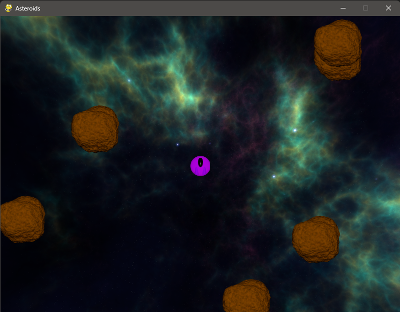

Featured Projects
Asteroid Pygame
Developed an Asteroid game using Pygame, applying object-oriented programming (OOP) principles, callback functions, and structured code organization. This project was inspired by a tutorial, which I followed to enhance my understanding of game development fundamentals, including sprite management, collision detection, and game loop mechanics. The code is organized into modular files (__main__.py, game.py, utils.py, models.py), showcasing my ability to implement clean, maintainable designs.
Resiliance Unity Game

Developed Resilience, a socially conscious city builder game, during my senior year in college using Unity, where I honed advanced C# concepts such as object-oriented programming, event-driven architecture, and large-scale project management. As part of a team, I contributed to designing a refugee camp management simulation. This project enhanced my ability to collaborate on complex codebases and apply practical game development techniques, reflecting my growth as a developer.